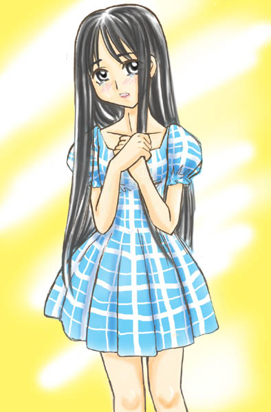
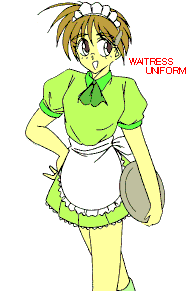

——少年少女文庫１００万Ｈｉｔ記念作品——

原作 １００万Ｈｉｔ記念作品製作委員会
第六話担当 猫野 丸太丸
第六話 「真織の かみかざり」
真須美の手が止まった。ごはんはしゃもじの上に乗ったまま、ほかほかと湯気を立てていた。伊織は差し出した茶碗を引っ込めたほうがいいのか、真剣に考えてしまった。
朝から家族四人（と猫一匹）が揃って和食を囲むなんていまどき珍しい。さすがは神道がお仕事の家だなと、伊織は思った。この家の娘——真織を、ただ遠くから眺めていたときには想像もしていなかった、彼女の日常生活だ。
でもまさかこんな目にあっているとは思わなかった。真織はいま、伊織の目の前で右の頬を押さえて涙ぐんでいる。叩いたのは守衛だ。

「なぜ、朝の境内の掃除を手伝わなかったのかね」
守衛は静かにそう言った。真織はただうつむいて、黙っていた。
「夕べ夜更かししたせいで寝坊したのだな」
そう、昨日宿題を終えたあとに真織とふたりでトランプをやったらつい盛り上がって、寝るのが十二時を過ぎてしまったのだった。朝の日課が五時半に始まる早川家でそれでは、翌朝がつらい。
守衛はそのことに気づいていたようだ。諭すような口調で言った。
「まあ、ときにははめをはずすこともあるだろう。きみが掃除しなかっただけならまだいい。だがな、それならなぜ、掃除を独りでやって疲れていた母さんが朝食を作るのを手伝ってあげなかったんだ。そんな態度は身勝手というものだろう」
「まあ、あなた。べつにあたしはいいんですのよ、」
真須美がやっとしゃもじを下ろしてそう言ったが、守衛は一顧だにしない。
「真織、おまえは自分がこの神社を守っていくべき人間であることを自覚しているのか」
守衛の言うことは大げさではない。真織は早川家の一人娘であり、すでにこの神社での役割をしっかりと持っているからだ。毎朝彼女が竹ぼうきで塵をはいていると、境内を通りがかるお年寄りは本殿に頭を下げ、それから真織に会釈する。真織が挨拶を返すと、みなとても嬉しそうにする。他人を幸せな気分にさせることなら、伊織の天使の力だって真織の微笑みにはかなわないかもしれない。
でも。本人がけっして、幸せとは限らないのだとしたら。
「……なんでよ」
真織が口を開いた。
「どうして、あたしだけいつもこんなに厳しくされなきゃいけないのよ、掃除したいなら父さんが自分ですればいいじゃない！」
真須美の顔が真っ青になった。
「なんてこと言うの、真織ちゃん。パパはお仕事で忙しいんですから。掃除はあたしたちの仕事でしょ」
「母さんも女だからって、こき使われてていいの？ 他所のお母さんはもっと気楽にやってるわよ！」
真織の怒りがおばさんにまで向かってしまった。まずいなと思い伊織も口を挟む。
「無理を言っちゃだめだよ真織ちゃん。おじさんもね、ほら、なんていうか、」
そうとりなそうとしたが、伊織は守衛にじろりとにらまれる。
「伊織君、これだけは我が家の大事な問題なんだ。きみは黙っていてくれないか」
「え……？」
守衛がそんなことを言うことはめったにない。本気で怒っているようだ。だがそれは真織も同じだった。
「……行ってきます」
朝ご飯に箸を付けないまま席を立つ真織。ご飯はひと粒も残すべきではないという早川家の決まりごとに、わざと逆らっているのだ。
守衛がさらになにか言い出さないうちに、真須美はさっさとテーブルの上を片付けてしまった。伊織が手伝おうとすると、そっと耳うちされる。
「ねえ、真織といっしょに行ってあげて」
「は、はいっ！」
伊織はあわてて立とうとして、テーブルに足をぶつけてしまった。シリアルがびっくりして「にゃお？」と鳴いた。
真織よりも身だしなみに時間がかかったせいで、伊織が真織に追いついたのは神社からずっと離れた坂道だった。ととと、と転びそうになりながら駆け寄って、息を切らす伊織。気軽な態度で話し掛けなきゃだめだと思い、人格矯正用ヘアクリップを頭に付けている。
「はあ、はあ。待ってよ真織ちゃん。そんなに怒っちゃ伊織も困るよぉ」
真織は大きなスポーツバッグを両手で下げていた。伊織はその左肩にぺたっとしがみつく。付ければたちまちおんなのこ気分になれるヘアクリップなしにはできない芸当である。
「ねぇ、機嫌直して。伊織のお願いっ」
そう言いつつ、うるうるした目で真織の顔を覗きこんだ。真織にそんな口を利くなんて気恥ずかしかったけど、ここはぜったい大切な場面だから、伊織は「幼なじみの仲の良い従姉妹」になりきろうとしているのだ。
「真織ちゃん。いますぐ帰って、おじさんに謝ろう、ね？」
しかし今日の真織は頑固だった。
「……伊織ちゃんはいいよね」
「え？」
「叔父さん叔母さんがカナダから帰ってきたら自分のおうちに帰れるもんね。あたしはずっとあの神社から出られないのに」
真織は伊織に詰め寄った。
「お正月に田舎でのんびりできる人はいいよね、あたしは中学生のときから巫女さんの格好して破魔矢を売らされてるわ。結婚式にウェディングドレスって憧れるよね、あたしなんかどうせジミジミな着物に決まってるもん」
「ちがうよ、真織ちゃんだったら白無垢の高島田だってぜったい似合う」
「それだけじゃないんだからっ」
真織が伊織の両腕を押さえつけた。伊織の背に電信柱が当たった。真織は鼻先が触れるんじゃないかと思うほど顔を近づけてきた。
「ねえ、聞いて。あたし、このまま歳をとって神社関係のひとと結婚して、母さんみたくなるのが嫌なの！」
真織の両手にぎゅうっと力が入った。
「だから、伊織ちゃん」
「……うん？」
「家出、しよっか」
——少年少女文庫１００万Ｈｉｔ記念作品——
原作 １００万Ｈｉｔ記念作品製作委員会
第六話担当 猫野 丸太丸
第六話 「真織の かみかざり」
真織はかすかに身体を震わせていた。学校をさぼったことなどない優等生の彼女だ。いつもの通学コースを外れるだけでそれなりに冒険なのかもしれない。お巡りさんに見つかったら補導されるかも、他校の男子生徒に見つかったら因縁をつけられるかも、そんなことを気にしているのだ。でもむしろ電車の慣れない雰囲気が怖いせいでもあった。きびきびした通勤客もいない——どこか異質な気配のする、車内。乗っているのはフリーターっぽい青年、アラブっぽい人、それから……行商のおばさん？ 後ろの席に座る酔っ払いの吐息が漂ってきたら、真織はどきっとした様子で通学カバンを胸に抱きしめた。
「真織ちゃん、怖いの？」
「怖くなんか、ないよ」
微笑んだ伊織はヘアクリップをはずして、落ち着いた口調で話し掛けた。
「心配するなよ、あたしがついてるから」
「……うん」
伊織の半そでの左腕が真織の右腕と触れ合ってときどきくすぐったいこと、ふたりのプリーツスカートの膝が仲良く並んで、そこからすべすべのふくらはぎが伸びていること。なによりも真織と自分がふたりきりだということ。いつもの伊織なら恥ずかしくなることばかりだったろうが、いまはお色気どころではない。伊織は真面目に訊ねた。
「ねえ、真織さん。急に家出だなんて言って、行き先はあるの？」
「うん、その点は、あたしにも考えがあるから」
次第に明るい顔になる真織。
「ごめんね、巻きこんじゃって……。伊織ちゃんは小旅行だと思っててくれればいいから」
「なに言ってるんだよ。真織さん、帰るのならいまだよ」
「だめ。ぜったい帰らない」
真織がここまで強情だとは知らなかった。
「あ、ほら、もう外は田んぼばっかりだよ！ きれいだねー」
ふたりは窓の外を眺めた。おしゃべりをするうちに景色は色を変え、山がちになり、トンネルを何回もくぐるようになった。
「ねえ……。真織さんは、おじさんのことが嫌いなの？」
「ううん。大好き」
真織ははっきりとそう言った。
「だからこそ、あたしの将来について簡単に考えてほしくないの。父さん、頭が固すぎるのよ……」
真織の眼がまだちょっと涙がちなのを見て、伊織もすこし悲しくなった。
これじゃ、すぐ帰る気にはならないだろう。まさか真織を置いてひとり帰るわけにはいかない。彼女の頭が冷えるまで、もうしばらくつきあうか。伊織は腹を決めた。
隣りの県に入り、電車の終着駅からさらに乗り継いで、ふたりが目的らしき駅に着いたのは昼過ぎだった。定期の清算をする真織の財布に十万円近くお札が入っているのを見て、伊織は仰天した。真織は日頃から無駄使いというものをしない。そして洋服は真須美がついついいいものを買ってしまうから、結局真織が大金を使っているところを見たことがない。お小遣いのブタ貯金箱だけで、そのくらいの金額は貯めていたのかもしれない。
「ええと、こっちが北ね」
彼女が案内板と見比べているのは、今年来た年賀状だった。
「その人の家へ行くのか」
「うん、そうなんだ。あ、すいませーん、このお店ってご存知ですか？ ……よく知ってる？ 助かります」
通りがかりの女の人に懇切丁寧に教えてもらっている真織。観光旅行みたいにはじめての土地を行き先を確かめ確かめ進んだ先は、古い倉がいくつも並んだ和風の町だった。そこを裏手に抜けると細い運河があり、ふたりはその堀端の遊歩道へ入った。縁石の上を歩いておどける真織。
「うふふ」
「なに？」
「こんなかんじでふたりで歩いたことってなかったね」
「え。えっと、そうだね。あたしたち家族旅行しか行ったことがなかったからね」
荷物が重いくせに足取りの軽い真織。これがふたりのデートなら、伊織だって天国にも昇る気分なのに。いまの自分はすっかり女の子だし、ましてや彼女が楽しがっているのは自分といっしょにいるからじゃない気がする。
これから行く先に、いったいなにがあるっていうんだ？
運河が二股に分かれたところの親水公園で、真織はあたりを見回した。
「目印があるの？」
「うん。たしか……あ、あれかな？」
パステルで描かれた木製の吊り看板を、真織が指差した。その下にメニューが立てかけてあるところを見ると、そこは小さな洋食屋さんのようだった。
「”Le Mont du Ciel”って名前なのか。どういう意味だろう」
「フランス語だよ。『天ヶ丘』って意味なんだって」
伊織がなぜと問い掛ける間もなく、真織は鳩の群れを突っ切り、小さな橋を渡り公園を出ると、その店の玄関へと回った。
「あれれ。昼ごはんを食べるの？」
「そうじゃなくって。こんにちはー！」
胸のリボンとスカート、髪を整え、ひと呼吸してから、扉を押す。ちりんちりんと来客を知らせるベルが鳴った。でも、カウンターには誰も出ていない。
「お客さんもいないね」
「……お休みなのかな。こんにちは？」
真織が呼びかけると、カウンターの下から、茶色く汚れた手が伸びて、こちらにひらひらと手を振った。
「はい、いらっしゃいま、せ」
背の高い男が、背の高いサイフォンを担いで立ちあがった。ガラス筒の頂上が天井に当たってコチン、と音がした。男はきょろきょろしてから、言った。
「どこかで会ったかな、君たち。うん？ その制服は……」
角刈りにのその男は片手をヒゲ面に当てて、真織の顔をじっと眺めた。真織はスポーツバッグを後ろに回して、えへへ、と笑った。
「あ、あたしのこと覚えてます、先生？」
「……覚えてるって。おまえ早川だろ、どうしてここへ？」
男はカウンターを回ってふたりの前へ出た。煤ですこし汚れた生成りの前掛け、ネッカチーフ、これで高い帽子をかぶったらコックさんだ。きっとこの店の料理人に違いない。
ところが、つぎの真織の行動には伊織も驚いた。彼女が正面から男に抱きついたのだ！
「わっ」
「危ない！」
伊織が継ぎ目から外れ落ちたサイフォンの上半分を受け止めた。伊織の細腕にそのガラスはあまりに重くて、伊織はまた落としそうになるところを必死でがんばる。
”あ、いま、ちょっとだけ魔法を使っちゃったかな……？”
でも真織にはもう、周囲のことがぜんぜん見えていない。彼女は「先生」と呼んだ男の前掛けをつかんで、顔を見つめた。
「せんせー、『かならず会いに行く』ってあたしが言ったの、覚えてる？ あたし、やっと来たんだよ！」
おんなのこは自分をかわいく見せたいとき、どうしてこんなに変身できるのだろう。そのときの真織は——相手を見上げた瞳が輝いていて、軽く開いた口元が、キスしたくなる柔らかさに見えて——そんな天使のような彼女の表情を、伊織はいままで見たことがなかった。
管の詰まったサイフォンを修理したから身体じゅうコーヒー臭くなってしまった、などと先生は関係ない言い訳をしながら、伊織たちにはハーブティーをいれてくれた。初対面の人相手にはお行儀よくしていないとまずいかなと思い、伊織はヘアクリップを付けてきちんとしている。真織はといえば、さっきの大胆な行動とは裏腹に、ティーカップを見つめたまま真っ赤になっている。
「久しぶりだな、早川。で、そっちの君は転校生の伊織さんか」
「はい。よろしくおねがいします、戸田先生」
伊織はぺこりと頭を下げた。
「そうか、いっしょに住んでいるのか。早川は一人っ子だったからな、妹ができたようなもんだ」
「ええ、早川さんにはお世話になってます」
照れ笑いしながら、伊織は男の顔を見つめた。戸田先生か。そうだ、家庭科の戸田 将司。たしかに去年は天ヶ丘にいたじゃないか。それで店の名が「天ヶ丘高校」といっしょなんだな。男だったおれは少ししか授業を受けなかったから、先生の印象は薄かったけど……。真織が憧れるほどの先生なんだろうか？
「先生って、いまは洋食屋さんなんですね。おしゃれなお店ですね！」
「嬉しいな、ありがとう」
ずいぶん楽しそうにしているけど。伊織は去年、戸田先生について聞いた良くない噂話も思い出していた。伊織はそれとなく訊いてみることにした。
「あたしは転校したばっかだから詳しくないんですけど。いまは……ずっとここにいらっしゃるんですか？」
戸田先生はカップに新しいハーブティーを注ぎながら言った。
「ああ、教師は辞めたんだ」
聞いていた真織の顔が曇った。まずいかなと思いつつ、話を続ける。
「ええー、残念です。どうしてお辞めになったんでしょうか、先生」
真織がカップを両手で包んで、ふう、と吹いた。なんだかため息みたいだった。
「理由はいろいろ、だったんだって。あのときは結局ごまかされちゃった」
「あのときって？」
「去年の十二月。あたし、先生の乗った電車を追いかけたんだから」
「はは、そうだったな」
戸田先生が苦笑いした。
「なんだよ早川。そのときのこと、まだ怒っているのか？」
真織が戸田先生を見つめた。
「べつに……。もう五月ですね。もっと早く来られると思ったんだけど」
「用もないのに来てどうするんだ、早川」
「先生に相談したいことは、いつだっていっぱいあったんです」
探りを入れているはずだったのに、ふたりの会話内容はどんどん伊織には分からないものになっていった。
”いくら口調を女の子に変えても、こういう遠まわしな会話は性に合わないや。先生とふたりになったときに男らしくずばっと聞かなきゃ……。”
だって伊織が聞いた噂話は「戸田先生が生徒とつきあっている」というものだったのだ。その相手が真織で、それが学校を辞めた理由だったりしたら……大変だ！ 伊織はじれったい気持ちで戸田先生があれこれ話すのを聞いていた。
「まあなんにせよ……」
戸田先生は頭を掻いた。
「二階に部屋が空いているから、荷物を上げるといい」
「はいっ！」
伊織はまだ話し足りなさそうな真織の背中を押して、階段を上がっていった。
四畳半和室のふすまを閉めると、真織は大きなため息をついた。
「良かったよぉ！ せんせい、昔とぜんぜん変わってなかった！」
いきなり今度は伊織に抱きつく真織。彼女ってば、ちょっと情緒不安定ぎみだ。
「いたた。真織ちゃん、どうしたの。家出なんかしてきたから、先生に追い返されると思った？」
「うん。正直、怒鳴られるかなって。もう足が、がくがく」
「真織ちゃんたら、おかしい」
「えへへ」
真織は伊織を離すと、おもむろにセーラー服を脱ぎ始めた。
「ええっ、なになに？」
「だって、セーラー服が汚れるでしょ。伊織ちゃんも着替えたら？」
伊織は真織が荷物を取りだすのを見た。スポーツバッグにはシャツ、スカート下着その他まで、着替えがちゃんと入っていたのだ。
「今朝いきなり家出なのに、準備いいんだね」
「ふだんからお家でムカッとくるたんびに、家出しようとカバンに中身を用意しちゃうことってないかしら？ まさか今日使うとは思ってなかったけどね。はい、ハンガーはここに置いておくね」
「う、うん」
服がふたり分入っていたということは、家出のときは伊織同伴のつもりだったということだ。なんだかくすぐったい気持ちでセーラー服を脱いだら、ヘアクリップが襟に引っかかって落ちてしまった。
伊織は目をぱちぱちさせた。
真織さんの下着姿だ。
真織さんはショーツとブラジャーしか付けていない。あと、くつ下もか。
真織さんが鏡の前で身体をねじって「ちょっとは背が伸びたかなー」とか言ってる……。
真織さんのせなか、真織さんのおしり、真織さんのふくらはぎ……。
五秒ぐらい時間が止まった。
「なに見てるの？」
「わ、なんでも、なんでもないよ」
どきどきする心臓を押さえようとして、伊織はブラジャーをした自分の胸をつかんでしまう。
「ふにゃ」
ぼうっとしていたら、クリーム色のトレーナーを頭からかぶせられた。
「ほら、伊織ちゃんお気に入りのジーンズも持ってきたから。早く履いちゃいなさい」
普段着の男っぽい格好をさせてもらったせいで、興奮は過ぎ去った。ようやく伊織は真織に質問する余裕ができた。
「ねえ、真織さん。まさかここに泊まる気なの、か？」
「そうよ。だって家出少女だもん」
「まずいんじゃない。女子高生が男の先生のところに泊まるなんて」
「ええ、まずいわよ。父さんには怒られるわよー。……あたしたちが家出してきたってこと、ほんとに理解してる？」
「開き直らないでよ」
真織は楽しくてしかたがないようだ。
「そうね。伊織ちゃんはあたしについてきただけだもんね。大丈夫、伊織ちゃんの身の潔白はあたしが証明するから」
自分の身のあかしはどうする気なんだと思って、伊織はあわてて頭を振った。真織さんにかぎってそんなふしだらなことをするわけがない。だけど……。
「ねえ、真織さんってさ……」
「え、なに？」
「ううん、なんでもない」
洋食屋備えつけの観光マップを渡されて適当に見て来いと言われたので、ふたりはその町をぶらつくことにした。
陶器の店で、さっき使った素敵なティーセットを見つけてはしゃいだ後は、となりのアクセサリー屋で品定めである。
「これなんかかわいくない？」
とっかえひっかえヘアピンやイヤリングを付けてみるふたり。問題は頭にアクセサリーを付けるとき、必然的に天使のヘアクリップは外さなければいけない、ということである。伊織は買い物の大半を男の子気分で体験することになった。
”きれいなアクセサリーを付けてはしゃぐ俺っていったい……”
「あ、これ、試せるってー」
すかさず女くさい香水をかけられてしまい、くらくらする伊織。嫌な顔をしたのがばれたのか、真織にお説教を食らう。
「伊織ちゃんってときどき汗臭いんだもん。良くないよ、気をつけないと」
たしかにそのとおりで、こういうことは真織のなすがままだった。ふと、真織が髪飾りのひとつを見つめているのに気づいた。彼女は壁に固定してあったそれを、そっと手に取った。
「いいな、これ」
その髪飾りの模様は、濃紺に銀が散らしてあって、ちょうど銀河を切り取ったみたいな感じだった。
「つけてみて」
「うん」
真織に頭を寄せてもらうと、伊織は、男の自分が見ていちばんいいと思えるところにその髪飾りを付けてみた。真織の黒くつやのある髪に収まる髪飾り。真織がさっき先生の前で見せた一瞬の美しさが、戻ってきたような気がした。
「似合うよ」
「そうだね」
真織は鏡のほうを向いてしまった。
「でも……。自分で買っても思い出にはならないかもね」
伊織はどきっとした。だから、なにか言わなきゃ、と思った。しばらくして言葉が出た。
「おれ、あ、あたしが、よかったら買ってあげようか？」
真織はしばらく伊織の顔を見つめた。それから、吹きだした。
「やぁだあ。伊織ちゃんじゃないのよ。買ってほしいのはね……、せんせいに」
「えっ？」
真織は髪飾りを棚に戻した。
「もう行こっ。このことは黙っていてね。言ったら銃殺！」
真織が先に店を出ても、伊織は黙ってじっとしていた。急にさっきの髪飾りをつかみとた。
「おじさんっ！ これいくらっ！」
伊織は三千円を払うと、髪飾りの入った袋をポケットにねじ込んで真織の後を追おうとした。後ろにいた女の人が、ぽん、と伊織の肩を叩く。
「おつり忘れてるわよ」
「ありがと、おばさん！」
伊織は店を出て、すぐに真織に追いついた。
「伊織ちゃん？ ここで迷子になったら、それこそ莫迦みたいだよ」
「あはは、ごめん」
でも彼女が出遅れた理由に真織は気づいていないようで、伊織はほっとした。
ふたりが戻ると戸田先生は夕食の準備をしていた。その内容がすごかった。
「こ、これって仔羊のロースト？」
「ああ、あと肉汁（ソース）かけたらしまいだから。ほら、できたぞ！」
冷蔵庫からつぎつぎと下ごしらえした材料が出てくる、そのどれもが新鮮でおいしそうだった。なにより戸田先生の手際の良さは、きっと料理のプロだからだろう。真織がささやいた。
「ね、料理の鉄人みたいでしょ。あたしの習ったのもね、母さんの和風プラスせんせいの洋風料理なんだ」
「そう、そうなんだ」
リズムを持って揺れる戸田先生の背中が見えた。たしかに、えびの背わたを取り、にんじんを丸く面取りしていくその手付きは、どこか真織に似ていた。先生がふたりの視線に気づいた。
「悪いがこの店にはいまウェイトレスがいないんだ。自分でテーブルを支度してくれるか」
「したく？」
やることをあてがわれて、途端に真織が元気に動き出す。
「はーい！ ほら伊織ちゃん、ぼうっとしてないで。クロスのそっち側を持ってね。わー、これ一枚で雰囲気変わるわねー。あ、先生、このグラスきれい！ 使っていい？」
真織に言われるまま、伊織は準備に駆けずり回った。
夜七時、暗めの明かりでディナーのテーブルを囲む。伊織は自分で並べたくせに、フォークとナイフの扱いに戸惑ってしまった。
「緊張するなよふたりとも。自分の家だと思ってくれ」
「そんなこといわれても……」
うつむく伊織に、戸田先生が肩をすくめた。真織もいまひとつ言葉が少ないが、さすがになんの抵抗もなくナイフを動かしている。
「なんだか、おしゃれだな……」
この雰囲気は早川家の晩さんとはまったく違うものだった。真織……。
「真織、こういうの、好き？」
「こういうのって、フランス料理？ もちろんよ、先生の作ったお料理だもん！」
「ありがとう、早川」
静かに微笑む戸田先生。真織は家出した自分の家より、こんなさっぱりした洋食屋が好きなのだろうか。伊織はご飯の皿を差しだそうとして、やりずらいなと思った。
そのとき、真織が笑った。
「もう、伊織ちゃんったらこういうときにも二杯は食べないと気が済まないのね」
真織が皿にささっとご飯を二回、よそった。きれいな山型になったご飯を受け取る。こんどは真織が、真須美おばさんのように見えた。
女の子ってほんと、いろんな面があって……大変だな、こりゃ。
洗いものを手伝って、各々お風呂に入った後、ふたりは部屋で並んでベッドに座っていた。
「今日は先生にすっかりご馳走になっちゃったね。あんな豪華な夕食」
「そうでしょ！ お金払ったらいくらするか分からないよ」
「……真須美おばさんのだって、真織ちゃんの料理だってそうだよ」
「なぁに？ 母さんがどうしたって？」
真織はきょとんとしただけだった。意味を分かってもらえなかったらしい。
「ううん、なんでもない。そんなにおいしいのに、この店にはお客さんがぜんぜん来ていないって」
「そうなのよ！ そこが大問題ね」
彼女はそれを気にしていたようだ。真織は、伊織の肩に手を置いた。
「だからね、お世話になりっぱなしだったぶん、先生に恩がえししようっ」
「え？」
真織は部屋の押入れを開けた。
「じゃーん、見つけちゃった」
「な、なにそれっ」
ハンガーにかかっていたのは、糊のきいたウェイトレスさんの衣装一式だったのだ。真織はパジャマの胸に若草色のワンピースを当てて、にこっ、と笑って見せる。
「この店にはいまウェイトレスさんがいないんだったよね。ほぉら、サイズもちょうどぴったり。あたしたちが働けば、売上げ倍増間違いなしじゃない？」
その制服を着た真織が伝票を片手に「ご注文は以上でよろしいでしょうかー」と言っているところが目に浮かんだ。……たしかに、かわいいかもしれない。うなずいたところで、すかさず真織が
「じゃ、明日六時に起きてさっそく開始よっ」
と宣言した。
「真織ちゃん待ってよ、あたしもやるの？」
「もちろん。だって伊織ちゃん、すごくかわいくて似合いそうだもん！ そうと決まれば、今夜はもう寝るのだわ」
「う、うん……」
伊織は真織と布団に入った。
”うわーん、あたしがウェイトレスさん？ なんだか恥ずかしいよー”
そう思いながら、伊織はヘアクリップを外した。
十秒後、それどころではないことに気づいた。
”なんでおれ、真織さんと同じ布団で寝てるんだ？”
さっきの着替えシーンの二の舞いだ。いや、むしろ状況は悪かった。
”布団から真織さんのぬくもり、首筋に真織さんの吐息、あ、ああ、いまおれの足首に、真織さんの足の親指が当たったあ！”
「え、なあに。このくらいでくすぐったいの？ もっとやっちゃお」
伊織はあわてて寝返りをうったが、真織の悪戯から逃れることはできなかった。真織の足先が、ひざの裏とか、ふとももとか、ええと、お尻とかをつっついてくる。
「ひ、ひゃ、ひゃあ、やめて……」
「ふむふむ。では、ここをくすぐるとどうなるのかな」
真織がわきの下、というより胸のやわらかいとこのはじっこをつまんだ。
「ばたっ」
「……なぁんだ、もう眠ったの？ もう。お・や・す・み、伊織ちゃん！」
伊織は気絶していた。
気絶したおかげでぐっすり寝られた伊織は、翌朝気持ち良く真織に起こされた。いそいそと髪を整え、洋食屋の制服を着こむ。ボディラインがくっきり出るタイトな半そでブラウス、スカートの下からちらちら見えるレースに、同系色のソックス。真織にメイドキャップを付けてもらい襟元のスカーフを直せば、姿見に映るのは、すっかりウェイトレスになったふたり。
「きゃーっ！ 伊織ちゃん、やっぱりかわいいーっ！」
「あ、はは。真織さんも、ね」

くせになりそうだ……。
ふたりはフランスパンにチーズをのせて焼き、トマトをスライスして簡単な朝ごはんを作った。じっと待っていると、八時過ぎにようやく寝ぼけ眼の戸田先生が現れた。
「（せーのっ）おはようございまーす！」
先生はウェイトレス姿の真織を見て、信じられないという顔をした。
「まさか……いや、早川？ どうして……」
「ふぅん、先生、そんなに驚くんだ」
先生は寝巻きに無精ひげ姿の自分に気づき、あわてて洗面所へと回れ右した。戻ってきたときには、昨日の腕利き料理人の顔に戻っていた。
”おいおい、先生も女の子に見られてると分かると、格好つけるんだね”
早川家とはやっぱり違う、テーブルに座っての朝食。先生が先に手を付ける。
「ええと。せんせい、どうかしら」
「おお、腕前がますます上がったんじゃないか？ うまい朝食だ」
恥ずかしそうに笑う真織。
「それもそうだけど……。ウェイトレスさん姿はいかが？」
戸田先生は口にパンのかけらをくわえたまま、目を丸くした。
「うむ、いいんじゃないかな」
「ほんと！ じゃね、じゃね。今日からあたしたち、先生のお店のお手伝いをするんだから！」
「早川が、か？ お願いしていいもんかな」
戸田先生はふたりを見つめた。下を向いてエプロンのひざをきゅっとつかんでいる真織。伊織まで、なんだか面接を受けているみたいな気分になる……。
「よし、頼む」
あっさり、許可が降りてしまった。
「開店は何時なの？ あたし、なに準備しようか？ ……」
異論をさしはさむ間もなく、やることが決まってしまった。。朝食が終わり真織が皿を洗っているすきに、やっと別室で先生を捕まえる伊織。
「先生っ。ひとつお聞きしていいですか？」
棚から小麦粉の袋を出している戸田先生に、伊織はヘアクリップをむしり取った状態で近づいた。
「ウェイトレスさんのこと。やっちゃっていいんですか？」
「なにがだ？」
先生が強力粉を二つ、三つと伊織に渡した。さらにクランベリーの瓶詰を出している先生の背中に、伊織は言った。
「真織さんは家出してきたんです。このまま、先生のお家に居すわる気かもしれませんよ」
「そうか、やっぱりな」
「やっぱりって……」
先生は瓶詰めを三つ抱えると、キッチンへ向かった。伊織はその後を追いかける。
「だからって先生が女子生徒と同棲したりしちゃ、まずいでしょう！」
「同棲とは穏やかじゃないな。あ、小麦粉はそこへ置いてくれ」
幸い、真織はテーブルを拭きに行っていて、声は聞こえそうになかった。伊織は先生にささやきかける。
「訪ねてきたからって生徒をほいほい家に泊めていいんですか？」
「よくあることなんだ。彼女は」
「ええっ？」
先生は冷蔵庫からバターを取りだして、ボウルの小麦粉の上に切って乗せた。
「去年、おれが天ヶ丘のそばに住んでいたときもな。彼女は親と喧嘩して、二回、うちに泊まりに来ている。そのあいだは家から学校に通ってたんだぜ」
「それじゃ、あなたが女子生徒とつきあってたって噂は……」
「とんでもない。おれだって社会常識くらいわきまえてるさ。ましてや今回は君がついてきてるんだ」
「そうだけど、でも……」
先生はまとまってきたパイ生地を見せて、延ばしてみるか、と聞いた。伊織は断った。
「彼女の親も了解済みだよ。彼女がまだ高校生なのにしっかり者すぎること、そしてときどき爆発して無茶をやりたくなってしまうこと。御神職だからかな、理解してくれるんだ。いいご両親さ」
「な、なんだ……」
伊織は心配して損したような気分になった。
「じゃ、教師を辞めた本当の理由は……」
「言いたくないな。真織さんとは関係ないんだ、勘弁してくれないか」
「……はい」
先生は生地を寝かせるために、ラップを張ったボウルを冷蔵庫に片付けた。
「しかし伊織さん、君って意外と男っぽいんだな。早川の前では猫をかぶっているのかい？」
「真織さんには黙っててくださいね」
そこへ真織が入って来た。
「そろそろ開店でしょ！ そのまえにせんせい、こっちに来ていただけませんか？」
戸田先生は調理台を回ってすぐそばに来た。真織の前でかがみこむと、彼女は先生のコック帽を留めるように銀色の飾りつきピンを挿した。
「ほら、いいでしょ！」
「こ、これは……。ありがとう」
「身だしなみをちゃんとしてくださいね」
あのアクセサリー屋でだろうか。いつの間に買っていたのだろう。真織もまた、こっそりそんなプレゼントを用意していたのだった。
「……ちぇっ」
伊織はテーブルの足をこつん、と蹴っとばした。
十一時、戸田先生が玄関に看板を掲げた。ふたりで同時に
「いらっしゃいませぇ！」
と叫ぶと、馴染みの客が仰天した。それから、ふたりの顔を見て、微笑んだ。
「紅茶です、どうぞ」
「マスター、ランチ二人前お願いしまーす」
「前を失礼いたします。おサカナの骨に、気を付けてくださいね」
「はい、三千円頂きましたので、お釣りは五百円です。ありがとうございました！」
最初は固い返事しかできなかったが、ふたりが雰囲気に慣れてくるにしたがって
「ごちそうさん」
「おいしかったよ」
「店が明るくなったんじゃないか？ また来るよ」
と、お客さんに言葉を掛けられるようになった。
「ありがとうございました！」
エプロンの前に手を当ててお辞儀をする伊織。自分の姿を見て楽しんでくれるお客さんがいるなんて、恥ずかしいというが不思議というか……。そうだ、この感覚じゃないのかな、真織が毎朝掃除をしているときの気分って！ ついこのあいだまで汗くさい男子校高生をやっていた伊織には、これははじめての体験だった。
「へい、いらしゃい！」
「伊織ちゃん、それじゃお寿司屋だよ」
「あ、そうか」
ぺろっと舌を出してみせる伊織。いまのしぐさでもお客さんのポイントを稼いだかもしれない。
「……あれ？」
ふと、異質の視線を感じた。伊織は玄関から外を見まわした。
「どうしたの、伊織ちゃん？」
「たしかいま、窓の外から女の人が覗いていたような……」
「ふぅん。なんでお店に入ってくれなかったのかな。まあ、あたしたちはいまできる仕事をやりましょっ」
「うん」
お昼休みの時間が過ぎると、ようやく客の足が途切れるようになった。伊織は椅子のひとつに腰かけた。
「ねえ、儲かってないのかなと思ってたけど、それなりにお客さんが来てるね」
「ほんと。あたしたち、役に立てたのかな……」
「もちろんさ。ひとりではこうスムーズにはこなせなかったよ」
聞こえていたらしい、戸田先生がキッチンでまな板を洗いながら言った。
「あ、ごめんなさい、」
「いや、ランチの客だけでは儲からないのは事実さ。これで夕食も出てくれればいいんだが……、そううまくはいかないか」
先生の予想は、いい意味で外れた。夕刻、勤め帰りの男たちが四、五人ずつ現れたのだ。
「おや、夕ご飯に来るなんて珍しいですね、お客さん」
「いやぁ、かわいい娘が入ったって聞いたから」
昼間の噂が、職場に広まったらしい……。そんなグループが五つも六つも来たから、洋食屋はとんでもない忙しさになった。
「ウェイトレスさーん、こっちこっち。若いねー、君、高校生？」
「な、な、おまえどっちがいいと思う？」
「そりゃロングヘアーの子だろ」
「いや、ショートの子も捨てがたくないか？」
先生はフライパンをゆすりながら器用に肩をすくめた。
「まさかとは思ったが、日替わりの材料を用意しておいて良かったぞ」
「真織ちゃん。男って……莫迦だね」
「うん」
ふたりは注文を取り、食器を並べ、それでも間にあわなくて盛り付けを手伝ったりもした。やっているうちに、なんだか真織と先生の息が合ってきたような気がした。
”なんだよ戸田先生、張りきっちゃって。ほんとうは真織が来たことが嬉しいんじゃないか”
伊織は悔しい気がして、真織が並べるはずの皿を先に持っていったりした。
帰りがけにある客が言った。
「ウェイトレスさんのおかげで店の雰囲気が良くなったのかと思ったけど。それだけじゃないね、マスター」
「と、いうと？ はい、千八百円です」
「ああ。料理自体に気合いが入っているのが分かるよ。いつもとは味が違う」
「味が違う……、そうですか、ありがとうございます」
戸田先生はしばらく両手を見つめ、なにか考えている風だった。
一日があっという間に過ぎた。
「うわぁ、こんなに肩が凝ったのってはじめてだよ」
伊織は（なるべく真織のほうを向かないように）制服を脱ぐと、肩についたブラジャーのひもの跡を指でもんだ。
「おつかれさま。じゃあ、先にお風呂に入ってきちゃいなよ」
「うん。そうだね」
伊織はとりあえずのトレーナーとホットパンツを着て、階下に降りた。
「先生！ お風呂、借りますねー！」
そう大声で叫ぶと、テレビで野球を見ていた戸田先生はお茶でむせていた。
さて。いまでは目をつぶらなくてもお風呂に入れるようになった伊織だが、いざたわわな乳房を目の前にするともう、すっかりどきどきしてしまう。
「うー、こんなものが人間にくっついているなんて、やっぱり信じられない」
両手で左右の大きさを比べてみたり、重さを量ってみたりする伊織（おいおい）。ふと、昨日真織の指先が触れた右のわきを触ってみる。
「ここに真織さんの指が触ったんだよな……。わわわ、おれ、なに考えてんだっ」
そのとき、
「伊織ちゃんお疲れさま！ お背中流しましょうかしらっ」
真織が入ってきたあっ！！！
”ちょっと待て真織さん、おれ裸なんだよ！ だいいち、君自身は服を着ているのか、着ていないのか？”
「ねえ伊織ちゃん、だいじょうぶ？ 湯舟に浸からないうちから気絶するようじゃ、なにかの病気かもよ」
「はははは、はい、いおりはげんき、です」
「じゃ、洗面器にボディーソープとスポンジを取って。あなたはいすに座って」
逆らえずに伊織が言うとおりにすると、真織はボディーソープを泡立て、ていねいに伊織の肩甲骨や背骨の横、首筋までこすってくれた。伊織はもう夢見心地だ。
「疲れが取れるでしょ。母さんもあたしにこうしてもらうのが好きなんだよ」
「あー……、そうなんだ……、ありがと」
真織の言うとおりだった。真織さん、どうして君はこんなに他人を気持ち良くする方法を知っているんだ……。
「じゃあ、伊織ちゃんが逃げられないようにして質問」
「え？」
真織は急に右手で伊織の二の腕をつかんで、怖い怖い声で言った。
「あなた、戸田先生のことどう思ってるの」
なんだってぇーっ！
「おれ——あたしが、戸田先生を？」
「そう。ごまかさないで、ね」
真織の顔は見えなかったが、伊織は恐ろしくて振り向く勇気が出なかった。
「なにを言いだすかと思えば……。ぜんぜんなんとも思ってないよ」
「……なあんだ、そうかあ。とうぜんよね」
緊張していた真織の手の力が、ふっと抜けた。
「だってウェイトレスさんやってるときにあなた、妙にあたしに張りあうんだもん。まさか伊織ちゃんまで戸田先生を好きになったんじゃないかって、あたし思った」
「そんなわけないじゃない」
真織の指の動きがまた穏やかに、伊織の感覚をくすぐるように変わった。耳もとでささやかれる。
「伊織ちゃんは、あたしの味方だよね。あたしを応援してくれるよね」
「う、うん」
「よし！ じゃ、明日もがんばってね！」
真織がぴしゃり、と伊織の背中を叩いた。
「あがったら教えてねー。あたしが次に入るから」
「にゃあ」
真織が去った後、伊織はタイルの上にぺったりと座りこんでしまった。
「真織さん、おれは……、君にじゃなくって、先生に嫉妬したんだよっ」
伊織はなにに腹を立てていいか分からなかった。とりあえず
「それもこれもみんなパラレルが悪いっ」とつぶやいた。
おしゃれな洋食屋で、ウェイトレスの格好の少女がかいがいしく働いているシーンが見える。
「ビーフストロガノフ、できたよー」
「はーい、あ、な、た！」
厨房のコックのことばに、幸せそうに答えるウェイトレス。ふたりは夫婦らしい。少女はよし、がんばるぞ、と気合いを入れて、テーブルを拭き終えた。構えたトレーに映る少女の顔は。
お、おれ？？
そして中から出てきたスケベそうな料理人は……、なんで藤本なんだよっ！
「伊織、今日もかわいいねっ」
「やぁだあ、ムネ触んないでよ、あなたぁ！」
くっついてくる藤本を手に持ったトレーで張り倒したところで、伊織はわれに帰った。
「……夢か」
どうやら真織より先に目が覚めたようだ。伊織は、すやすやと寝息をたてている真織の横顔に見入った。
”真織さんって、先生のことが好きなんだよな”
なんで真織は先生みたいな男が好きなんだろう。伊織は自分の中に芽生えているかもしれないおんなのこの感性を働かせて想像してみた。将来に対する不満——このままでは神社で一生を暮らすことになるかもしれない、安全だけど変化のない未来。戸田先生は揺れる自分を連れ出してくれる非日常。
伊織はこころのなかに守衛おじさんと戸田先生を並べてみる。男としての自分は、真織さんと結婚して神社を継ぐだけの決意もないし、戸田先生のように独立して生活していける才能があるわけでもない。これほど頼りがいのない、自分……。
この場に瑞樹がいたなら、相談に乗ってくれるのにな。それとも叱り飛ばされるかな。
真織が目を覚ました。
「おはよう、伊織ちゃん」
「うん。おはよう」
その日が定休日だったことはラッキーだった。昨日の大にぎわいで、料理の材料がいくつも足りなくなっていたのだ。三人は卸売りの店へ食材を買いに行くことにした。戸田先生が香辛料を見ているあいだ、伊織たちは先生のメモにしたがって肉類を選ぶ。
「わー、おっきい！」
伊織がＴボーンステーキ用の冷凍肉を見ておもわず声を上げる。
「ほらほら、よそ見してないで」
真織もラムチョップの塊にあばら骨がずらりと並んでいるのを見て一瞬顔がこわばったが、どうにか両手で持ち上げてかごに入れた。
「ねえ、このメモにエビって書いてあるけどさ、どれのことだろ」
伊織はコールドケースに並ぶパックされたエビを見て、悩んでしまった。クルマエビ、甘エビ、ブラックタイガー……。こんなに種類があるなんて。
頬に指を当てて考えこんでいると、肩越しにひょい、と大正エビのパックを渡された。イカ、貝柱、グリーンピースと、必要なものがぽんぽん、と揃う。
「ありがとう、真織！」
振り向いてそう返事しようとしたら、真織はずっと向こうの陳列棚で鶏ささみの大袋と格闘していた。おかしい、それならいま食材を渡してくれたのは？ あたりを見まわした伊織だったが、誰も見つけられなかった。いや、歩き去る女の人のひとりに見覚えがある気がする……。
「あのひとかな……。でも知らない人が、なぜ」
考えたけど、理由は分からなかった。
一時間後、ふたりはミニバンの後ろに荷物を積み込んでいる戸田先生と合流した。
「さ、こっちへ貸して」
真織が嬉しそうに戸田先生に買い物袋を渡そうとするので、伊織は
「あ、自分でやりまーす」
と言って、ひとつ三、四キロはある肉や魚をクーラーボックスに全部詰めてしまった。
「伊織さーん、やっぱり君って男勝りだね」
「ほんと、そうでしょ」
「そんなふうに言われても」
ふたりに笑われて、伊織は頬を膨らませた。
「ところで、あんな簡単なメモでなにを買っていいのか分かったかな？」
苦笑いしつつ伊織たちが仕入れたものをチェックする戸田先生。
「おや。このシーフードは……」
「間違ってましたか？」
真織が心配そうに覗きこむ。先生は首を振った。
「いや、そうじゃない。ちょうどこれを使いたかったんだ。君たちが選んだのか？」
「ええ、そうですけど」
真織の言葉に、戸田先生はまたぼうっと、なにかを考えている風だった。
「とにかくありがとう。さあ、家へ帰ろう」
戸田先生と真織は、ふたりで明日使う材料の下ごしらえをしていた。料理ができない伊織は、今晩自分たちが食べる分の豆のすじを取っていた。
さっきの店で見かけた女性が気になる。なんだか昨日、店を覗きこんでいたのと同じ人のような気がするのだ。
”そうだ、あの女の人も天使界の誰かかもしれないな。”
伊織はヘアクリップを使ってパラレルを呼びだしてみることにした。
”おい、パラレル、パラレル！ 聞いてたら返事しろ！”
パラレルの声は一向に聞こえてこなかった。
”ヘアクリップが壊れてるのかな……”
伊織はヘアクリップを手の中で転がしてみる。飾りの隙間から中を覗いてみた。液晶表示が点滅している。こんなの付いてたのか……あれ？
「圏外」
”……まじかよ。使えないやつ”
伊織がそんなことをしているあいだにも、真織と戸田先生はてきぱきと作業を進めていった。週末までに必要な分は出来上がってしまったようだ。
「ひとやすみするか」
との戸田先生のことばを合図に、三人はお茶にすることにした。真織さん、もうティーポットがどこにしまってあるか覚えちゃったんだな。
いつのまにか真織と先生はテーブルに隣り合わせで座っていて、伊織ひとりがお客さんみたいにその向かいに座っていた。真織が先生の手をとって、
「やっぱりこういう仕事してると手が荒れちゃうね、せんせい。明日はハンドクリーム買ってこようか」
と言っている。
”真織がどんどん遠くなる……”
そんな弱気なことを思ってしまい、あわてて首を振る伊織。なにか言いそうになったとき電話が鳴った。真織が出た。
「はーい、ル・モンデュシエルです。……父さん？」
真織は即座に電話を切ろうとした。戸田先生がそれを止めた。
「代わりました、ご無沙汰しております早川さん、戸田です。その節は……。はい、いえ、迷惑だなんて。え、なんですって？」
戸田先生はちゃんと用件を聞けよと言ってから、もういちど真織に受話器を渡した。
「うん……なによ父さん、あたりまえでしょ、絶対帰らない、あたしはここに住むんだから。決心？ もちろんよ！」
それから、また戸田先生に代わった。電話の向こうで守衛はこう言った。
「真織ももう高校二年生。自分のことは自分で決められる年齢でしょう。今度の家出の件で彼女の決意の固さはよく分かりました。彼女が望むのなら、どうか真織を戸田先生に引き取っていただきたい」
戸田先生は唖然としていた。
「つぎは伊織さん、代われって」
伊織が電話を取った。伊織が真織のことを弁解するひまもなかった。ただ守衛は厳しいことばで続けた。
「ああ伊織君、真織が面倒をかけたね。面倒ついでにもうひとつ頼みがある。真織が本気であることを父親として確かめたい。ついては明日午後三時、そちらのレストランにお伺いする。真織には、自分が本当にそちらでやって行くのだという決意の証しを用意してもらおう」
「……はい」
伊織は、電話の内容をふたりに伝えた。
「お、おじさんてば、なに言ってるんだろうね。そんなわけないじゃない。ね、真織」
真織は伊織のほうを向かなかった。ただ、戸田先生の眼を見つめていた。
「あたし。あたし、本気だもん！ あたし、戸田先生の奥さんになりたいっ！」
真織が戸田先生の右腕にぎゅうっとしがみついた。
「ねえいいでしょ、せんせいっ！ あたしと先生のふたりなら最高の洋食屋さんができるんだってこと、父さんにだって見せてあげるんだから」
戸田先生は立ち尽くしたままだ。そんな態度に、伊織はいきり立った。
「なんですぐに否定しないんだよっ！！」
「え？」
表情を曇らせる真織。だめだ、真織に、真織に言わなきゃ。
「戸田先生、ちょっとあっちへ行ってて」
先生にキッチンへ行ってもらい、居間で真織とふたりきりになる伊織。
「……なによ」
伊織はなにを言っていいのか分からなかった。
もし、真織といい雰囲気になったら。伊織は口説き文句をあれこれ考えたことがある、恋する男の子ならみなそうだろう。でも、いざとなったらそんなうまくは言えないものだ。
こんなことを言うつもりじゃなかった。でも口をついて出てくるのは、伊織のいちばんの思い出のことだった。
「ねえ、去年のサマーキャンプを覚えている？」
「サマーキャンプ？ ええ」
「うちのクラスに、し、進藤伊織君っているよね。彼が話してくれたんだ、真織さんがどれだけいいひとか」
「分からないよ」
「想い出してよ！」
だって伊織は、進藤伊織はあのことをいつまでも覚えているのだから。
「進藤君って、あのときキャンプ先でひどい風邪を引いちゃったんだ。でも食べられるものって言ったら飯ごう炊さんの硬ったいご飯だけじゃん、ほんと、死にそうだったって言ってた」
「うん」
真織は椅子に座って、まっすぐに伊織を見てくれた。伊織は震える声で続けた。
「テントの外でみんながキャンプファイアーしているあいだ、ひとり寝袋で水筒を枕にして、うんうんうなってた。そのとき——だれかがテントの中に入ってきてね。冷たく絞ったタオルで体を拭いてくれたんだ！」
「うん」
「その娘が食べさせたくれたのが——おかゆだよ、塩鮭の入ったおかゆ。なんでキャンプ地でそんなものが手に入ったんだと思う？ 進藤君はね、その娘のことを天使だと思ったって……。真織さんなんでしょ、進藤君を助けてくれたの！」
「うん、あたしも覚えてる」
「なら……」
真織は微笑んだ。
「あのおかゆ、進藤君は気に入ってくれたんだ。よかった……。だって、おかゆの材料ね。あれ、戸田先生が持ってきたお弁当を煮ちゃったんだもの」
伊織はなにも言うことができなかった。
「進藤君が病気だってこと先生に相談したら、戸田先生、すぐに自分のお弁当をあたしにくれたの。おかゆを進藤君のところに届けた後ね、しかたがないから残りをふたりで食べたの。星がきれいだった……」
真織はその話をするとき、ほんとうに嬉しそうにした。
「いまの話、進藤君から直接聞きたかったな。そうすれば謝れたもの。あたしは天使なんかじゃないって」
「謝らなくっていいよ！ はっきり言わなかった進藤君が……悪いんだから。でも、口に出せない想いもあると、思う」
「分かるわ、それ。あたしもそうだったもの」
真織はあくまで優しかった。一生の思い出がだいなしになったのに、伊織は真織を嫌いになることができなかった。
「あれ？ 戸田先生？」
気がつくと、先生はキッチンにも居間にもいなかった。
「逃げたのかな……そんなわけないか。あたし、探してくるね。真織は料理の続きをお願い」
「待ってよ、伊織ちゃん……」
伊織はサンダルをつっかけて、夕暮れの遊歩道を見渡した。外は人影もまばらだ。親水公園まで来たところで、伊織は先生を見つけた。誰かといっしょだ。あの女の人は！
伊織が近づいたのに気づくと、その女の人はすぐに逃げてしまった。
「あ、待って！」
追いかけようとする伊織を、先生が呼びとめた。
「いいんだ」
「『いいんだ』って。あの女の人、ずっとあたしたちのことを見てた人ですよ」
そうだ、昼間に外から洋食屋の様子を探っていたり、卸売りの店で伊織たちを助けてくれたりしたのは、あの女の人だったのだ。
「ああ。向こうには未練があるらしい」
「未練って。先生、あの人とつきあってたんですか。それとも」
「妻だ。別れた」
伊織の怒りが噴出した。
「大人だったら分かってんだろ、先生！ それならなおさら真織さんと先生が結婚なんて、許されるわけないじゃないか！」
「どうしてだめなんだ。それから、おれはもう教師じゃない」
先生の意外なことばに、驚愕する伊織。
「戸田先生、まさかあんた……」
先生は公園のベンチにどっかりと座りこんで、額に手を当てた。
「正直、分からなくなっている。彼女がいれば、これからうまくやっていけそうな気がするんだ。早川となら幸せになれるかもしれない」
「そんな、」
伊織はことばが出てこなかった。なぜなら伊織には見えるのだ、戸田先生の左手の小指から流れる赤い糸が。糸の先は細かく震えていて、まるで結びつく相手を求めてさまようかのようだった。そしてさっき洋食屋を出るときに——真織の小指からも、赤い糸が伸びていた。
もし糸同士が重なり合ったら……どんな障害があっても、ふたりはひとつになろうとするのだろうか。そしてもし伊織が結ばれた糸を引きちぎったら、ふたりはどうなるのだろうか。
そんなことはできない。だから、人間として、男として、けじめをつけなければいけない。伊織は叫んだ。
「たとえば、たとえばのはなしだけどな。天ヶ丘高校には、真織さんのことを本当に愛してるやつがいるんだ！ 先生みたいになにかできるわけじゃないし、真織さんを幸せにしてやれるって客観的な保証もない。だけどな、あんたなんかより、ずっと、ずっと真織さんひとりのことが好きなんだ！ 『うまくやっていけそうな気がする』？ 迷っているくらいだったら、せんせい、あなたは身を引いてください！」
胸を張って言わなければいけないことばなのに、最後のほうはすっかり涙声になっていた。先生は、
「迷っているよ、たしかにな。分かった。明日、はっきりさせてやる」
先生はただそう言い残して、先に帰ってしまった。
「それから、そこに隠れている女の人！」
伊織はあてずっぽうで、公園の噴水の向こうへ大声で言った。
「あなた、戸田先生が好きなんだったら、もっとちゃんと気持ちを言わないと、うちの真織さんに先生を取られちゃうぞ！」
伊織は自分にとっても耳の痛い台詞を叫んで、その場を立ち去った。
寝る時間になって伊織が二階の部屋に入ると、真織は先に布団を敷いて、その上に枕を抱えて座っていた。隣りをとんとんと叩いて、伊織に座るようにうながす。
「ねえ、戸田先生となに話してたの。無謀にもあたしの先生を奪うつもり？」
伊織はため息をついた。
「それだけは違うよ。べつに先生に気があるわけじゃない」
「ふうん。じゃあ、伊織ちゃんは単にあたしの邪魔をしたいだけなんだ」
「そうさ。あいつじゃ、真織さんを幸せにはできないんだもの」
真織は静かに微笑んだ。
「そんなにつらそうな顔しないでよ。分かってるわよ。伊織ちゃんがあたしに意地悪したくて言ってるんじゃないってことくらい。伊織ちゃんはいつだってあたしの味方だもん。でも、どうして戸田先生じゃだめって言いきれるのよ」
真織がまったく自分に気がないことが分かっているのに、このうえなにを言うことがあるのだろう。
「あの人はいままでの人生でつまづいたからって、自分に足りないものを真織に求めているだけなんだ。真織と一緒なら店がうまくいくだなんて。じゃあ、もし店がうまくいかなかったらどうするんだ。店に学校の名前をつけるようなやつだよ。また『学校に戻る』なんて言いだすかも」
「それで？ たとえそうだとしても、あたしの気持ちはどうなるの？」
もしおれが進藤伊織だったら、こんな話、真織はとうに聞く耳持たなかっただろう。自分は、いとこの女の子であるという立場を悪用しているのだ。そんなこころの声を、振りはらって言った。
「真織さんはすごく優しい人なんだ。きみのそばにいると、みんな幸せな気分になれる。それって絶対ひとつの才能だよ！ 神社がつまらないからすぐに洋食屋のウェイトレスさんだなんて、将来を決めてしまうのはもったいないと思う」
「……そうかな」
真織はそのまま布団に横になった。伊織はわざと元気に、その横に寝転んだ。
伊織はもう止めようと思ったけど、どうにか最後にこう言った。
「でも、決めるのは真織ちゃんだよね。明日、がんばりなよ」
「うん！ ……どうしたの？」
「ちょっとトイレ」
とうとう我慢できなくなった。真織に聞こえないように、トイレに座って伊織は泣いた。真織が寝入った後も伊織はじっと泣いていた。
布団に戻るときに、伊織は通学カバンの奥に隠しておいた髪飾りを取りだした。髪飾りは窓からの月明かりを反射してきらきらと輝いた。伊織はそれを、ぎゅっと握りしめてから真織の枕もとに置いた。
翌朝、真織は伊織より先に起きて、ウェイトレスさんの服に着替えていた。
「おはようっ、伊織ちゃん。今日一日、お願いね！」
「うん」
朝一番に戸田先生と顔を合わせたときに、真織は「ほらっ」と言って長い髪をなでて見せた。頭にはあの星くず模様の髪飾りが留めてあった。
でも戸田先生がなにも反応を示さなかったので、真織は拍子抜けしたようだった。
「……どうしたのかな。ま、いっか」
真織と伊織はてきぱきと準備をこなした。まずは昼間に来る一般客の相手をしなければならない。客たちはふたりが水を注ぎ、料理を並べるたびに言った。
「もう俺、ここのファンになっちゃったよー」
「真織ちゃんのファン、じゃないのか？」
「こんな田舎にもおしゃれなレストランができたんだよなぁ」
真織はトレーを下ろして頭を下げた。
「ありがとうございます！」
真織の動きがますます生き生きとしてきた。恋する少女である真織は、客の冗談にすらますます自信を膨らませているのだ。いっぽう真織のことしか頭にない伊織は、客の声援の半分が自分に向いていることにまったく気づかない。ときどき
「あのお客の視線、伊織ちゃんの胸にくぎづけだったよ。触られないように気をつけてね」
と真織に言われたときだけ、はっとして前を隠すくらいだった。
午後一時半。いよいよ守衛たちを出迎える準備をしなければならない。真織は精一杯の洋食で守衛たちを出迎え、それで自分の決意を明らかにするつもりだった。先生に目くばせすると、真織はウェイトレスの制服から割烹着に着替えた。伊織が真面目な声で言った。
「手伝わせて」
「いいの？ 伊織ちゃん」
「うん。手伝わせて」
昨日まで真織を邪魔したお詫びの気持ちもあったのかもしれない。伊織が熱心に動いたので、午後の準備は戸田先生と真織でというよりむしろ、真織と伊織のふたりですすめられた。真織が小麦粉をつけた豚のヒレ肉に、伊織が溶き玉子をつけパン粉で包んでいく。
「あ、このパン粉にパセリを混ぜるのって」
「真須美おばさんの得意技だよね」
「伊織ちゃん、イカは出さなくていいから」
「なんで……？ そうか。おじさん、イカアレルギーだった」
「そうそう。家族みんな、注文が多くて大変なのよね」
こんな作業もこれで最後だろうと思いながら、伊織は一所懸命真織を手伝った。息のあったふたりの様子を見て、戸田先生はうん、うんとうなずいていた。
午後三時きっかりに、早川一家が到着した。真須美は真織の姿を見るなり、わぁっと泣きついた。
「心配したのよー、真織ちゃんだいじょうぶっ？ 身体壊してない？」
「やだぁ、母さん。戸田先生のところにいたんだもん、元気に決まってるでしょ」
守衛はかしこまって戸田先生に迷惑についての詫びをいれていた。その後について来た連中を見て、伊織は驚いた。
「藤本っ。なんでここに？」
「心配したんだよ、伊織ちゃーん。その姿も色っぽくて似合うねっ」
藤本は真須美おばさんの真似をして伊織に抱きついてきた。もちろんすぐに伊織に張り倒される。
「いてて。伊織ちゃん、戸田先生の新しい連絡先を調べるのに僕らがこの三日間どれだけ苦労したと思ってるの。とうぜん今日のごちそうを食べる権利はあるよな」
「そうなんだ、ごめんごめん」
戸田先生、「おじさんおばさんは了解済みだ」なんて言ってたくせに、真織の実家にすぐ連絡してなかったんだな。やっぱり真織に下心があったんじゃないか……。
そこへ瑞樹が飛びこんできた。
「こらっ、伊織！ ちゃんと真織ちゃんのお伴をしてたんだろうな！」
「瑞樹、来てくれたんだ、ありがと」
「ん？ 伊織、今日はウェイトレスさんの格好なんかして、いつになく神妙ね。っていうか、あんた落ちこんでない？」
「……今回はいろいろあったんだよ、ほんとうに」
ふたりとの気軽なやりとりで、伊織のつらい気持ちはいくらかほぐれた。でも……。
「さて——」
守衛が真織に向きあった。互いににらみ合う、ふたり。
「料理を頂こうか」
「どうぞ、お・父・さ・ま」
テーブルをふたつつなげて、壁側真中に守衛が座った。その左隣りに真須美、右には藤本、瑞樹。守衛の向かいには戸田先生が座った。料理を並べ終わると、その隣りに真織、伊織が座る。
真織は箸を渡そうとしたが守衛は「いや、それは失礼だろう」と言って、ナイフとフォークに持ち換えた。
前菜のマリネ、それからポタージュ、主菜のヒレカツのトマトソース風味と、守衛たちは順番に食べていった。ただ「うまいっ、おいしいっ、最強っす」とつぶやきながらがっついている藤本。「真織と伊織にしてはなかなかやるじゃん」と言いながら食べる瑞樹。「あら、おいし。あらあらおいし」とはしゃぐ真須美。そして、黙々とフォークを進める守衛。それをじっと見つめる真織。守衛がナプキンで口を拭いた。
「ふむ。おまえの気持ち、よく分かった。それでは」
そのとき、伊織の視界に電光が走った。赤い糸の洪水が見える。守衛の糸は真須美の糸としっかりとつながっている、藤本のはあいかわらずふらふらしている、瑞樹のはまだ短くてじっとしたままだ、真織の糸は戸田先生のそばで、不安げに揺れている。そしてまるでつむじ風に巻かれるように渦を巻く戸田先生の糸と、もう一本。この場にいない女性の糸が、戸田先生の周囲をはげしく回転しているのに気づいた。戸田先生の糸は、その糸には見向きもしない。やがて、真織の糸を迎え入れるようによりそった。でも戸田先生の強い糸に引っ張られたら、真織の糸はいまにも引きちぎられそうで——。
「だめえっ！」
伊織は叫んで、姿の見えない女性の糸のほうを引っ張った！
物陰でがたっと音がして、見覚えのあるひとりの女性が現れた。いつ着替えたのだろう、この店のウェイトレス姿が実に似合っていた。藤本が一目見ただけで「きれいだ」とつぶやいた。
真織が「あ、あなたはっ」と叫び、同時に戸田先生が「秀美っ」と名前を呼んで立ちあがった。その女性、秀美さんが叫んだ。
「あなたはあたしじゃなきゃだめなの！」
秀美さんと戸田先生が向かいあった。ふたりの赤い糸は燐光を放ちながら互いに絡みあい、部屋じゅうを駆け巡る。ついには完全にシンクロし、新体操のリボンのように美しい弧を描いた。でもどこまでいっても平行線で、あとほんの少しの隙間が埋まらない。二本の糸の先端が伊織の前に来た。
「イオちゃん、いまがチャンスですわあ」
突然頭のなかに響いたパラレルの声を合図に、伊織はその端どうしをつかむと、ぎゅっと握りしめた。
きぃぃぃぃぃん！
伊織の耳にだけ届く衝撃音とともに、ふたりの赤い糸は完全につながった。戸田先生が秀美さんを抱きしめる。真須美が「あらまあ」とつぶやいて頬に手を当てた。
「秀美。ごめん」
「ううん。きっと戻ってくると思ってたよ、将司」
ふたりはキスをした。それを見た真織は全身の力が抜けたようになり、伊織にもたれかかった。
「……負けちゃった」
恋の戦いに、いま決着がついたのだった。
そこへおずおずと口を挟んだのは守衛だった。
「お取りこみ中、申しわけないが。うちの真織の養子縁組の件はいかがいたしましょうか？」
「養子縁組？」
驚く戸田先生に、守衛は姿勢を正した。
「ええ。真織がうちを出て、戸田家の娘になるということです」
それを聞いた真織が笑い出した。つられて、伊織も笑った。守衛以外の全員が笑ったところで、
「こら、伊織ちゃん。笑いすぎっ」
伊織は真織にひじで突っつかれた。
「おめでとっ、戸田先生、秀美さん！」
真織は守衛に頭を下げた。
「父さん、母さん、ごめん！ あたし、すぐ家に帰るから。朝のお掃除もがんばるから！ ごめんね！」
戸田先生たちのラブシーンに毒気を抜かれたのか、守衛は真織をあっさり許した。
伊織はキッチンの隅でヘアクリップを付け、パラレルを呼びだした。
”こら、パラレル！ おまえ、いないふりして俺たちの様子をずっとうかがってたんだな！”
”ええ、もちろん”
”なんですぐに助けてくれなかったんだよ！”
”うふふ。それが縁結びの天使というものですわあ”
”うぐぅ”
珍しくまっとうなことを言うパラレルに、二の句も継げない伊織だった。
戸田先生は打ちあけ話をした。ようするに、戸田先生は将来設計のことで秀美さんと意見が対立、教師を辞めたり洋食屋を開いたりしたもののうまくいかなくなって、喧嘩別れしていたらしい。いまやっとふたりで、洋食屋さんをやっていく決心がついたというわけだ。それを聞いた真織もすっかり諦めがついたのか、笑顔でふたりに挨拶していた。
「結局このウェイトレスさんの服も秀美さんのためのものだったんだし、先生のヘアピンを選んだのもシーフードでアドバイスをくれたのも、秀美さんだったんだよね」
「なんだよ秀美、ほんとにずっと見てたのか」
「そうよ将司。あなたってば高校生なんかに翻弄されてるんだもん、おかしくって」
そんな秀美さんも、伊織から最後の勇気をもらわなかったらどうなっていたか分からない。
「あたし、秀美さんの影に最初から負けてたようなもんね。ひっどい話」
両手を腰に当てて恨みごとを言う真織に、頭を下げる戸田先生。
「すまんっ」
「べーだ。許してあげないもん、戸田せんせいっ」
夕方。来たときと同じセーラー服姿に戻ったふたりは、家族を置いて先に歩き出していた。
「なんだか、戸田先生ってとんだ勘違い野郎だったね。そういえば最後に戸田先生がなにか言ってたけど。真織ちゃん、なんて言われたの？」
「『早川、君を大切にしてくれる人は案外すぐそばにいるかもしれないぞ』だって。振られた相手に言われると、むかつくわねぇ」
元気に振舞う真織に、ふと心配になって訊ねる伊織。
「真織ちゃん、ほんとうにいいの？」
「いいよ、べつに。だってあたしのは恋じゃない、ただの憧れだったんだから」
真織は伊織の顔を覗きこんだ。
「どこかにいい男、いないかな」
「え？」
伊織は真っ赤になった。真織は数歩進むと、くるりと振りかえった。頭にはあの髪飾りをつけていた。
「あたしたちもがんばろうね。行こっ、伊織ちゃん！」
「うん！」
真織は伊織と手をつないだ。雰囲気の良い町並みを、ふたりは仲良く歩いていった。
あとがき
猫野は他人様のキャラクターで遊ぶのが大好きです。前三話で真織ちゃんが目立たなかったので、たっぷり自己主張させてみました。
「憧れは恋とは違う」、そうですね。伊織ちゃん、思い出だけの恋を叩きつぶされて、これからはしっかり真織と向かいあわなければいけません。彼女の恋はここからが真のスタートラインです。え、瑞樹にも気があるの？ しかたのない娘だねー、伊織ちゃんっ。
恋の行方は、後に託して。